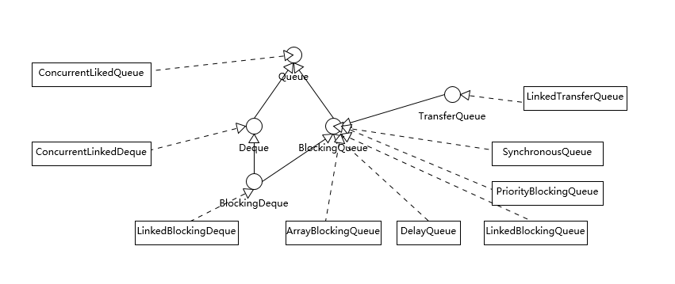

- 00 开篇词 以面试题为切入点，有效提升你的Java内功-极客时间.md
- 01 谈谈你对Java平台的理解？.md
- 02 Exception和Error有什么区别？-极客时间.md
- 03 谈谈final、finally、 finalize有什么不同？-极客时间.md
- 04 强引用、软引用、弱引用、幻象引用有什么区别？-极客时间.md
- 05 String、StringBuffer、StringBuilder有什么区别？-极客时间.md
- 06 动态代理是基于什么原理？-极客时间.md
- 07 int和Integer有什么区别？-极客时间.md
- 08 对比Vector、ArrayList、LinkedList有何区别？-极客时间.md
- 09 对比Hashtable、HashMap、TreeMap有什么不同？-极客时间.md
- 10 如何保证集合是线程安全的 ConcurrentHashMap如何实现高效地线程安全？-极客时间.md
- 11 Java提供了哪些IO方式？ NIO如何实现多路复用？-极客时间.md
- 12 Java有几种文件拷贝方式？哪一种最高效？-极客时间.md
- 13 谈谈接口和抽象类有什么区别？-极客时间.md
- 14 谈谈你知道的设计模式？-极客时间.md
- 15 synchronized和ReentrantLock有什么区别呢？-极客时间.md
- 16 synchronized底层如何实现？什么是锁的升级、降级？-极客时间.md
- 17 一个线程两次调用start()方法会出现什么情况？-极客时间.md
- 18 什么情况下Java程序会产生死锁？如何定位、修复？-极客时间.md
- 19 Java并发包提供了哪些并发工具类？-极客时间.md
- 20 并发包中的ConcurrentLinkedQueue和LinkedBlockingQueue有什么区别？-极客时间.md
- 21 Java并发类库提供的线程池有哪几种？ 分别有什么特点？-极客时间.md
- 22 AtomicInteger底层实现原理是什么？如何在自己的产品代码中应用CAS操作？-极客时间.md
- 23 请介绍类加载过程，什么是双亲委派模型？-极客时间.md
- 24 有哪些方法可以在运行时动态生成一个Java类？-极客时间.md
- 25 谈谈JVM内存区域的划分，哪些区域可能发生OutOfMemoryError-极客时间.md
- 26 如何监控和诊断JVM堆内和堆外内存使用？-极客时间.md
- 27 Java常见的垃圾收集器有哪些？-极客时间.md
- 28 谈谈你的GC调优思路-极客时间.md
- 29 Java内存模型中的happen-before是什么？-极客时间.md
- 30 Java程序运行在Docker等容器环境有哪些新问题？-极客时间.md
- 31 你了解Java应用开发中的注入攻击吗？-极客时间.md
- 32 如何写出安全的Java代码？-极客时间.md
- 33 后台服务出现明显“变慢”，谈谈你的诊断思路？-极客时间.md
- 34 有人说“Lambda能让Java程序慢30倍”，你怎么看？-极客时间.md
- 35 JVM优化Java代码时都做了什么？-极客时间.md
- 36 谈谈MySQL支持的事务隔离级别，以及悲观锁和乐观锁的原理和应用场景？-极客时间.md
- 37 谈谈Spring Bean的生命周期和作用域？-极客时间.md
- 38 对比Java标准NIO类库，你知道Netty是如何实现更高性能的吗？-极客时间.md
- 39 谈谈常用的分布式ID的设计方案？Snowflake是否受冬令时切换影响？-极客时间.md
- 周末福利 一份Java工程师必读书单-极客时间.md
- 周末福利 谈谈我对Java学习和面试的看法-极客时间.md
- 结束语 技术没有终点-极客时间.md
20 并发包中的ConcurrentLinkedQueue和LinkedBlockingQueue有什么区别？-极客时间
在上一讲中，我分析了 Java 并发包中的部分内容，今天我来介绍一下线程安全队列。Java 标准库提供了非常多的线程安全队列，很容易混淆。
今天我要问你的问题是，并发包中的 ConcurrentLinkedQueue 和 LinkedBlockingQueue 有什么区别？
典型回答
有时候我们把并发包下面的所有容器都习惯叫作并发容器，但是严格来讲，类似 ConcurrentLinkedQueue 这种“Concurrent*”容器，才是真正代表并发。
关于问题中它们的区别：
- Concurrent 类型基于 lock-free，在常见的多线程访问场景，一般可以提供较高吞吐量。
- 而 LinkedBlockingQueue 内部则是基于锁，并提供了 BlockingQueue 的等待性方法。
不知道你有没有注意到，java.util.concurrent 包提供的容器（Queue、List、Set）、Map，从命名上可以大概区分为 Concurrent*、CopyOnWrite和 Blocking等三类，同样是线程安全容器，可以简单认为：
- Concurrent 类型没有类似 CopyOnWrite 之类容器相对较重的修改开销。
- 但是，凡事都是有代价的，Concurrent 往往提供了较低的遍历一致性。你可以这样理解所谓的弱一致性，例如，当利用迭代器遍历时，如果容器发生修改，迭代器仍然可以继续进行遍历。
- 与弱一致性对应的，就是我介绍过的同步容器常见的行为“fail-fast”，也就是检测到容器在遍历过程中发生了修改，则抛出 ConcurrentModificationException，不再继续遍历。
- 弱一致性的另外一个体现是，size 等操作准确性是有限的，未必是 100% 准确。
- 与此同时，读取的性能具有一定的不确定性。
考点分析
今天的问题是又是一个引子，考察你是否了解并发包内部不同容器实现的设计目的和实现区别。
队列是非常重要的数据结构，我们日常开发中很多线程间数据传递都要依赖于它，Executor 框架提供的各种线程池，同样无法离开队列。面试官可以从不同角度考察，比如：
- 哪些队列是有界的，哪些是无界的？（很多同学反馈了这个问题）
- 针对特定场景需求，如何选择合适的队列实现？
- 从源码的角度，常见的线程安全队列是如何实现的，并进行了哪些改进以提高性能表现？
为了能更好地理解这一讲，需要你掌握一些基本的队列本身和数据结构方面知识，如果这方面知识比较薄弱，《数据结构与算法分析》是一本比较全面的参考书，专栏还是尽量专注于 Java 领域的特性。
知识扩展
线程安全队列一览
我在【专栏第 8 讲】中介绍过，常见的集合中如 LinkedList 是个 Deque，只不过不是线程安全的。下面这张图是 Java 并发类库提供的各种各样的线程安全队列实现，注意，图中并未将非线程安全部分包含进来。

我们可以从不同的角度进行分类，从基本的数据结构的角度分析，有两个特别的Deque实现，ConcurrentLinkedDeque 和 LinkedBlockingDeque。Deque 的侧重点是支持对队列头尾都进行插入和删除，所以提供了特定的方法，如:
- 尾部插入时需要的addLast(e)、offerLast(e)。
- 尾部删除所需要的removeLast()、pollLast()。
从上面这些角度，能够理解 ConcurrentLinkedDeque 和 LinkedBlockingQueue 的主要功能区别，也就足够日常开发的需要了。但是如果我们深入一些，通常会更加关注下面这些方面。
从行为特征来看，绝大部分 Queue 都是实现了 BlockingQueue 接口。在常规队列操作基础上，Blocking 意味着其提供了特定的等待性操作，获取时（take）等待元素进队，或者插入时（put）等待队列出现空位。
/**
* 获取并移除队列头结点，如果必要，其会等待直到队列出现元素
…
*/
E take() throws InterruptedException;
/**
* 插入元素，如果队列已满，则等待直到队列出现空闲空间
…
*/
void put(E e) throws InterruptedException;
另一个 BlockingQueue 经常被考察的点，就是是否有界（Bounded、Unbounded），这一点也往往会影响我们在应用开发中的选择，我这里简单总结一下。
- ArrayBlockingQueue 是最典型的的有界队列，其内部以 final 的数组保存数据，数组的大小就决定了队列的边界，所以我们在创建 ArrayBlockingQueue 时，都要指定容量，如
public ArrayBlockingQueue(int capacity, boolean fair)
- LinkedBlockingQueue，容易被误解为无边界，但其实其行为和内部代码都是基于有界的逻辑实现的，只不过如果我们没有在创建队列时就指定容量，那么其容量限制就自动被设置为 Integer.MAX_VALUE，成为了无界队列。
- SynchronousQueue，这是一个非常奇葩的队列实现，每个删除操作都要等待插入操作，反之每个插入操作也都要等待删除动作。那么这个队列的容量是多少呢？是 1 吗？其实不是的，其内部容量是 0。
- PriorityBlockingQueue 是无边界的优先队列，虽然严格意义上来讲，其大小总归是要受系统资源影响。
- DelayedQueue 和 LinkedTransferQueue 同样是无边界的队列。对于无边界的队列，有一个自然的结果，就是 put 操作永远也不会发生其他 BlockingQueue 的那种等待情况。
如果我们分析不同队列的底层实现，BlockingQueue 基本都是基于锁实现，一起来看看典型的 LinkedBlockingQueue。
/** Lock held by take, poll, etc */
private final ReentrantLock takeLock = new ReentrantLock();
/** Wait queue for waiting takes */
private final Condition notEmpty = takeLock.newCondition();
/** Lock held by put, offer, etc */
private final ReentrantLock putLock = new ReentrantLock();
/** Wait queue for waiting puts */
private final Condition notFull = putLock.newCondition();
我在介绍 ReentrantLock 的条件变量用法的时候分析过 ArrayBlockingQueue，不知道你有没有注意到，其条件变量与 LinkedBlockingQueue 版本的实现是有区别的。notEmpty、notFull 都是同一个再入锁的条件变量，而 LinkedBlockingQueue 则改进了锁操作的粒度，头、尾操作使用不同的锁，所以在通用场景下，它的吞吐量相对要更好一些。
下面的 take 方法与 ArrayBlockingQueue 中的实现，也是有不同的，由于其内部结构是链表，需要自己维护元素数量值，请参考下面的代码。
public E take() throws InterruptedException {
final E x;
final int c;
final AtomicInteger count = this.count;
final ReentrantLock takeLock = this.takeLock;
takeLock.lockInterruptibly();
try {
while (count.get() == 0) {
notEmpty.await();
}
x = dequeue();
c = count.getAndDecrement();
if (c > 1)
notEmpty.signal();
} finally {
takeLock.unlock();
}
if (c == capacity)
signalNotFull();
return x;
}
类似 ConcurrentLinkedQueue 等，则是基于 CAS 的无锁技术，不需要在每个操作时使用锁，所以扩展性表现要更加优异。
相对比较另类的 SynchronousQueue，在 Java 6 中，其实现发生了非常大的变化，利用 CAS 替换掉了原本基于锁的逻辑，同步开销比较小。它是 Executors.newCachedThreadPool() 的默认队列。
队列使用场景与典型用例
在实际开发中，我提到过 Queue 被广泛使用在生产者 - 消费者场景，比如利用 BlockingQueue 来实现，由于其提供的等待机制，我们可以少操心很多协调工作，你可以参考下面样例代码：
import java.util.concurrent.ArrayBlockingQueue;
import java.util.concurrent.BlockingQueue;
public class ConsumerProducer {
public static final String EXIT_MSG = "Good bye!";
public static void main(String[] args) {
// 使用较小的队列，以更好地在输出中展示其影响
BlockingQueue<String> queue = new ArrayBlockingQueue<>(3);
Producer producer = new Producer(queue);
Consumer consumer = new Consumer(queue);
new Thread(producer).start();
new Thread(consumer).start();
}
static class Producer implements Runnable {
private BlockingQueue<String> queue;
public Producer(BlockingQueue<String> q) {
this.queue = q;
}
@Override
public void run() {
for (int i = 0; i < 20; i++) {
try{
Thread.sleep(5L);
String msg = "Message" + i;
System.out.println("Produced new item: " + msg);
queue.put(msg);
} catch (InterruptedException e) {
e.printStackTrace();
}
}
try {
System.out.println("Time to say good bye!");
queue.put(EXIT_MSG);
} catch (InterruptedException e) {
e.printStackTrace();
}
}
}
static class Consumer implements Runnable{
private BlockingQueue<String> queue;
public Consumer(BlockingQueue<String> q){
this.queue=q;
}
@Override
public void run() {
try{
String msg;
while(!EXIT_MSG.equalsIgnoreCase( (msg = queue.take()))){
System.out.println("Consumed item: " + msg);
Thread.sleep(10L);
}
System.out.println("Got exit message, bye!");
}catch(InterruptedException e) {
e.printStackTrace();
}
}
}
}
上面是一个典型的生产者 - 消费者样例，如果使用非 Blocking 的队列，那么我们就要自己去实现轮询、条件判断（如检查 poll 返回值是否 null）等逻辑，如果没有特别的场景要求，Blocking 实现起来代码更加简单、直观。
前面介绍了各种队列实现，在日常的应用开发中，如何进行选择呢？
以 LinkedBlockingQueue、ArrayBlockingQueue 和 SynchronousQueue 为例，我们一起来分析一下，根据需求可以从很多方面考量：
- 考虑应用场景中对队列边界的要求。ArrayBlockingQueue 是有明确的容量限制的，而 LinkedBlockingQueue 则取决于我们是否在创建时指定，SynchronousQueue 则干脆不能缓存任何元素。
- 从空间利用角度，数组结构的 ArrayBlockingQueue 要比 LinkedBlockingQueue 紧凑，因为其不需要创建所谓节点，但是其初始分配阶段就需要一段连续的空间，所以初始内存需求更大。
- 通用场景中，LinkedBlockingQueue 的吞吐量一般优于 ArrayBlockingQueue，因为它实现了更加细粒度的锁操作。
- ArrayBlockingQueue 实现比较简单，性能更好预测，属于表现稳定的“选手”。
- 如果我们需要实现的是两个线程之间接力性（handoff）的场景，按照【专栏上一讲】的例子，你可能会选择 CountDownLatch，但是SynchronousQueue也是完美符合这种场景的，而且线程间协调和数据传输统一起来，代码更加规范。
- 可能令人意外的是，很多时候 SynchronousQueue 的性能表现，往往大大超过其他实现，尤其是在队列元素较小的场景。
今天我分析了 Java 中让人眼花缭乱的各种线程安全队列，试图从几个角度，让每个队列的特点更加明确，进而希望减少你在日常工作中使用时的困扰。
一课一练
关于今天我们讨论的题目你做到心中有数了吗？ 今天的内容侧重于 Java 自身的角度，面试官也可能从算法的角度来考察，所以今天留给你的思考题是，指定某种结构，比如栈，用它实现一个 BlockingQueue，实现思路是怎样的呢？
请你在留言区写写你对这个问题的思考，我会选出经过认真思考的留言，送给你一份学习奖励礼券，欢迎你与我一起讨论。
你的朋友是不是也在准备面试呢？你可以“请朋友读”，把今天的题目分享给好友，或许你能帮到他。
© 2019 - 2023 Liangliang Lee. Powered by Vert.x and hexo-theme-book.